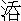

早潮纔罷晚潮來，一月周流六十回。
不獨光陰朝復暮，杭州老去被潮催。
這四句詩，是唐朝白樂天杭州錢塘江看潮所作。話中說杭州府有一才子，姓李，名宏，字敬之。此人胸藏錦繡，腹隱珠璣，奈時運未通，三科不第。時值深秋，心懷抑鬱，欲渡錢塘，往嚴州訪友。命童子收拾書囊行李，買舟而行。划出江口，天已下午。李生推篷一看，果然秋江景致，更自非常，有宋朝蘇東坡《江神子》詞為證：
鳳凰山下雨初睛，水風清，晚霞明。一朵芙蓉開過尚盈盈。何處飛來雙白鷺，如有意，慕娉婷。
忽聞江上弄哀箏，苦含情，遣誰聽。煙斂雲收依約是湘靈。欲待曲終尋問取，人不見，數峰青。
李生正看之間，只見江口有一座小亭，匾曰「秋江亭」。舟人道：「這亭子上每日有遊人登覽，今日如何冷靜？」李生想道：「似我失意之人，正好乘著冷靜時去看一看。」叫：「家長，與我移舟到秋江亭去。」舟人依命，將船放到亭邊，停橈穩纜。李生上岸，步進亭子。將那四面窗槅推開，倚欄而望，見山水相啣，江天一色。李生心喜，叫童子將桌椅拂淨，焚起一爐好香，取瑤琴橫於桌上，操了一回。曲終音止，舉眼見牆壁上多有留題，字跡不一。獨有一處連真帶草，其字甚大。李生起而觀之，乃是一首詞，名《西江月》。是說酒、色、財、氣四件的短處：
酒是燒身焇燄，色為割肉鋼刀，財多招忌損人苗，氣是無煙火藥。
四件將來合就，相當不欠分毫，勸君莫戀最為高，纔是修身正道。
李生看罷，笑道：「此詞未為確論，人生在世，酒色財氣四者脫離不得。若無酒，失了祭享宴會之禮；若無色，絕了夫妻子孫人事；若無財，天子庶人皆沒用度；若無氣，忠臣義士也盡委靡。我如今也作一詞與他解釋，有何不可。」當下磨得墨濃，蘸得筆飽，就在《西江月》背後，也帶草連真，和他一首：
三杯能和萬事，一醉善解千愁，陰陽和順喜相求，孤寡須知絕後。
財乃潤家之寶，氣為造命之由，助人情性反為仇，持論何多差謬！
李生寫罷，擲筆於桌上。見香煙未燼，方欲就坐，再撫一曲，忽然畫簷前一陣風起！
善聚庭前草，能開水上萍，
惟聞千樹吼，不見半分形。
李生此時，不覺神思昏迷，伏几而臥。朦朧中，但聞環珮之聲，異香滿室，有美女四人，一穿黃、一穿紅、一穿白、一穿黑，自外而入，向李生深深萬福。李生此時似夢非夢。便問：「四女何人？為何至此？」四女乃含笑而言：「妾姊妹四人，乃古來神女，遍遊人間。前日有詩人在此遊玩，作《西江月》一首，將妾等辱罵，使妾等羞愧無地。今日蒙先生也作《西江月》一首，與妾身解釋前冤，特來拜謝！」李生心中開悟，知是酒色財氣四者之精，全不畏懼，便道：「四位賢姐，各請通名。」
四女各言詩一句，穿黃的道：「杜康造下萬家春。」穿紅的道：「一面紅妝愛殺人。」穿白的道：「生死窮通都屬我。」穿黑的道：「氤氳世界滿乾坤。」原來那黃衣女是酒，紅衣女是色，白衣女是財，黑衣女是氣。
李生心下了然，用手輕招四女：「你四人聽我分剖。
香甜美味酒為先，美貌芳年色更鮮，
財積千箱稱富貴，善調五氣是真仙。」
四女大喜，拜謝道：「既承解釋，復勞褒獎，乞先生於吾妹妹四人之中，選擇一名無過之女，奉陪枕席，少效恩環。」李生搖手，連聲道：「不可，不可！小生有志攀月中丹桂，無心戀野外閒花。請勿多言，恐虧行止。」四女笑道：「先生差矣。妾等乃巫山洛水之儔，非路柳牆花之比。漢司馬相如文章魁首，唐李衛公開國元勳，一納文君，一收紅拂，反作風流話柄，不聞取譏於後世。況佳期良會，錯過難逢，望先生三思。」
李生到底是少年才子，心猿意馬，拿把不定，不免轉口道：「既賢姐們見愛，但不知那一位是無過之女？小生情願相留。……」言之未已，只見那黃衣酒女急急移步上前道：「先生，妾乃無過之女。」李生道：「怎見賢姐無過？」酒女道：「妾亦有《西江月》一首：
善助英雄壯膽，能添錦繡詩腸，神仙造下解愁方，雪月風花玩賞。……」
又道：「還有一句要緊言語，先生聽著：
好色能生疾病，貪杯總是清狂，八仙醉倒紫雲鄉，不羨公侯卿相。」
李生大笑道：「好個『八仙醉倒紫雲鄉』，小生情願相留。」方留酒女，只見那紅衣色女向前，柳眉倒豎，星眼圓睜，道：「先生不要聽賤婢之言！－－賤人，我且問你：你只講酒的好處就罷了，為何重己輕人，亂講好色的能生疾病？終不然三四歲孩兒害病，也從好色中來？你只誇己的好處，卻不知己的不好處：
平帝喪身因酒毒，江邊李白損其軀；
勸君休飲無情水，醉後教人心意迷！」
李生道：「有理。古人亡國喪身，皆酒之過，小生不敢相留。」
只見紅衣女妖妖嬈燒的走近前來，道：「妾身乃是無過之女，也有《西江月》為證：
每羨鴛鴦交頸，又看連理花開，無知花鳥動情懷，豈可人無歡愛。
君子好逑淑女，佳人貪戀多才，紅羅帳裡兩和諧，一刻千金難買。」
李生沉吟道：「真個『一刻千金難買』！」才欲留色女，那白衣女早已發怒罵道：「賤人，怎麼說『千金難買』？終不然我倒不如你？說起你的過處盡多：
尾生橋下水涓涓，吳國西施事可憐。
貪戀花枝終有禍，好姻緣是惡姻緣。」
李生道：「尾生喪身，夫差亡國，皆由於色，其過也不下於酒。請去！請去！」
遂問白衣女：「你卻如何？」白衣女上前道：「
收盡三才權柄，榮華富貴從生，縱教好善聖賢心，空手難施德行。
有我人皆欽敬，無我到處相輕，休因閒氣鬥和爭，問我須知有命。」
李生點頭道：「汝言有理，世間所敬者財也。我若有財，取科第如反掌耳。」才動喜留之意，又見黑衣女粉臉生嗔，星眸帶怒，罵道：「你為何說『休爭閒氣』？為人在世，沒了氣還好？我想著你：
有財有勢是英雄，命若無時枉用功。
昔日石崇因富死，銅山不助鄧通窮。」
李生搖首不語，心中暗想：「石崇因財取禍，鄧通空有錢山，不救其餓，財有何益？」便問氣女：「卿言雖則如此，但不知卿於平昔間處世何如？」黑衣女道：「像妾處世呵：
一自混元開闢，陰陽二字成功，含為元氣散為風，萬物得之萌動。
但看生身六尺，喉間三寸流通，財和酒色盡包籠，無氣誰人享用？」
氣女說罷，李生還未及答，只見酒色財三女齊聲來講：「先生休聽其言，我三人豈被賤婢包籠乎？且聽我數他過失：
霸王自刎在烏江，有智周瑜命不長；
多少陣前雄猛將，皆因爭氣一身亡。
先生也不可相留！」
李生躊躕思想：「呀！四女皆為有過之人。－－四位賢姐，小生褥薄衾寒，不敢相留，都請回去。」四女此時互相埋怨，這個說：「先生留我，為何要你打短？」那個說：「先生愛我，為何要你爭先？」話不投機，一時間打罵起來：
酒罵色，盜人骨髓；色罵酒，專惹非災；財罵氣，能傷肺腑；氣罵財，能損情懷。直打得酒女鳥雲亂，色女寶髻歪，財女捶胸叫，氣女倒塵埃，一個個蓬鬆鬢髮遮粉臉，不整金蓮撒鳳鞋。
四女打在一團，攪在一處。李生暗想：「四女相爭，不過為我一人耳。」方欲向前勸解，被氣女用手一推，「先生閃開，待我打死這三個賤婢！」李生猛然一驚，衣袖拂著琴絃，噹的一聲響，驚醒回來。
擦磨睡眼，定睛看時，那見四女蹤跡！李生撫髀長歎：「我因關心太切，遂形於夢寐之間。據適間夢中所言，四者皆為有過，我為何又作這一首詞讚揚其美？使後人觀吾此詞，恣意於酒色，沉迷於財氣，我即為禍之魁首。如今欲要說他不好，難以悔筆。也罷，如今再題四句，等人酌量而行。」就在粉牆《西江月》之後，又揮一首：
飲酒不醉最為高，好色不亂乃英豪。
無義之財君莫取，忍氣饒人禍自消。
這段評話，雖說酒色財氣一般有過，細看起來，酒也有不會飲的，氣也有耐得的，無如財色二字害事。但是貪財好色的又免不得吃幾杯酒，免不得淘幾場氣，酒氣二者又總括在財色裡面了。今日說一樁異聞，單為財色二字弄出天大的禍來。後來悲歡離合，做了錦片一場佳話，正是：
說時驚破奸人膽，話出傷殘義士心。
卻說國初永樂年問，北直隸涿州，有個兄弟二人，姓蘇，其兄名雲，其弟名雨。父親早喪，單有母親張氏在堂。那蘇雲自小攻書，學業淹貫，二十四歲上，一舉登科，殿試二甲，除授浙江金華府蘭溪縣大尹。蘇雲回家，住了數月，憑限已到，不免擇日起身赴任。蘇雲對夫人鄭氏說道：「我早登科甲，初任牧民，立心願為好官，此去只飲蘭溪一杯水；所有家財，盡數收拾，將十分之三留為母親供膳，其餘帶去任所使用。」
當日拜別了老母，囑咐兄弟蘇雨：「好生侍養高堂，為兄的若不得罪於地方，到三年考滿，又得相見。」說罷，不覺慘然淚下。蘇雨道：「哥哥榮任是美事，家中自有兄弟支持，不必掛懷。前程萬里，須自保重！」蘇雨又送了一程方別。蘇雲同夫人鄭氏，帶了蘇勝夫妻二人，服事登途，到張家灣地方。蘇勝稟道：「此去是水路，該用船隻，偶有順便回頭的官座，老爺坐去穩便。」蘇知縣道：「甚好。」原來坐船有個規矩，但是順便回家，不論客貨私貨，都裝載得滿滿的，卻去攬一位官人乘坐，借其名號，免他一路稅課，不要那官人的船錢，反出幾十兩銀子送他，為孝順之禮，謂之坐艙錢。蘇知縣是個老實的人，何曾曉得恁樣規矩，聞說不要他船錢，已自夠了，還想甚麼坐艙錢。那蘇勝私下得了他四五兩銀子酒錢，喜出望外，從旁攛掇。蘇知縣同家小下了官艙。一路都是下水，渡了黃河，過了揚州廣陵驛，將近儀真。因船是年遠的，又帶貨大重，發起漏來，滿船人都慌了。蘇知縣叫快快攏岸，一時間將家眷和行李都搬上岸來。只因搬這一番，有分教：蘇知縣全家受禍。正合著二句古語，道是：
漫藏誨盜，冶容誨淫。
卻說儀真縣有個慣做私商的人，姓徐，名能，在五壩上街居住。久攬山東王尚書府中一隻大客船，裝載客人，南來北往，每年納還船租銀兩。他合著一班水手，叫做趙三、翁鼻涕、楊辣嘴、范剝皮、沈鬍子，這一班都不是個良善之輩。又有一房家人，叫做姚大。時常攬了載，約莫有些油水看得入眼時，半夜三更悄地將船移動，到僻靜去處，把客人謀害，劫了財帛。如此十餘年，徐能也做了些家事。這些夥計，一個個羹香飯熟、飽食暖衣，正所謂「為富不仁，為仁不富」。你道徐能是儀真縣人，如何卻攬山東王尚書府中的船隻？況且私商起家千金，自家難道打不起一隻船？是有個緣故：王尚書初任南京為官，曾在揚州娶了一位小奶奶，後來小奶奶父母卻移家於儀真居住，王尚書時常周給。後因路遙不便，打這隻船與他，教他賃租用度。船上豎的是山東王尚書府的水牌，下水時，就是徐能包攬去了。徐能因為做那私商的道路，倒不好用自家的船，要借尚書府的名色，又有勢頭，人又不疑心他，所以一向不致敗露。
今日也是蘇知縣合當有事，恰好徐能的船空閒在家。徐能正在岸上尋主顧，聽說官船發漏，忙走來看，看見搬上許多箱籠囊筐，心中早有七分動火。結末又走個嬌嬌滴滴少年美貌的奶奶上來，徐能是個貪財好色的都頭，不覺心窩發癢，眼睛裡迸出火來。
又見蘇勝搬運行李，料是僕人，在人叢中將蘇勝背後衣袂一扯。蘇勝回頭，徐能陪個笑臉問道：「是那裡去的老爺，莫非要換船麼？」蘇勝道：「家老爺是新科進士，選了蘭溪縣知縣，如今去到任，因船發了漏，權時上岸，若就有個好船換得，省得又落主人家。」徐能指著河裡道：「這山東王尚書府中水牌在上的，就是小人的船，新修整得好，又堅固又乾淨。慣走浙直水路，水手又都是得力的。今晚若下船時，明早祭了神福，等一陣順風，不幾日就吹到了。」蘇勝歡喜，便將這話稟知家主。
蘇知縣叫蘇勝先去看了艙口，就議定了船錢。因家眷在上，不許搭載一人。徐能俱依允了。當下先秤了一半船錢，那一半直待到縣時找足。蘇知縣家眷行李重復移下了船。
徐能慌忙去尋那一班不做好事的幫手，趙三等都齊了，只有翁范二人不到。買了神福，正要開船，岸上又有一個漢子跳下船來道：「我也相幫你們去！」徐能看見，呆了半晌。原來徐能有一個兄弟，叫做徐用，班中都稱為徐大哥、徐二哥。真個是「有性善有性不善」，徐能慣做私商，徐用偏好善。但是徐用在船上，徐能要動手腳，往往被兄弟阻住，十遍倒有八九遍做不成。所以今日徐能瞞了兄弟不去叫他。那徐用卻自有心，聽得說有個少年知縣換船到任，寫了哥子的船，又見哥哥去喚這一班如狼似虎的人，不對他說，心下有些疑惑，故意要來船上相幫。徐能卻怕兄弟阻擋他這番穩善的生意，心中默默不喜。正是：
涇渭自分清共濁，薰蕕不混臭和香。
卻說蘇知縣臨欲開船，又見一個漢子趕將下來，心中倒有些疑慮，只道是趁船的。叫蘇勝：「你問那方纔來的是甚麼人？」蘇勝去問了來，回覆道：「船頭叫做徐能，方纔來的叫做徐用，就是徐能的親弟。」蘇知縣想道：「這便是一家了。」
是日開船，約有數里，徐能就將船泊岸，說道：「風還不順，眾弟兄且吃神福酒。」徐能飲酒中間，只推出恭上岸，招兄弟徐用對他說道：「我看蘇知縣行李沉重，不下千金，跟隨的又只一房家人，這場好買賣不可錯過，你卻不要阻擋我。」徐用道：「哥哥，此事斷然不可！他若任所回來，盈囊滿篋，必是貪贓所致，不義之財，取之無礙。如今方纔赴任，不過家中帶來幾兩盤費，那有千金？況且少年科甲，也是天上一位星宿，哥哥若害了他，天理也不容，後來必然懊悔。」徐能道：「財采倒不打緊，還有一事，好一個標緻奶奶！你哥正死了嫂嫂，房中沒有個得意掌家的，這是天付姻緣，兄弟這番須作成做哥的則個！」徐用又道：「從來『相女配夫』。既是奶奶，必然也是宦家之女，把他好夫好婦拆散了，強逼他成親，到底也不和順，此事一發不可。」
這裡兄弟二人正在唧唧噥噥，船艄上趙三望見了，正不知他商議甚事，一跳跳上岸來。徐用見趙三上岸，洋洋的倒走開了。趙三問徐能：「適纔與二哥說甚麼？」徐能附耳述了一遍。趙三道：「既然二哥不從，倒不要與他說了，只消兄弟一人便與你完成其事。今夜須如此如此，這般這般。」徐能大喜道：「不枉叫做趙一刀。」原來趙三為人粗暴，動不動自誇道：「我是一刀兩段的性子，不學那黏皮帶骨。」因此起個異名，叫做趙一刀。
當下眾人飲酒散了，權時歇息。看看天晚，蘇知縣夫婦都睡了，約至一更時分，聞得船上起身，收拾篷索。叫蘇勝問時，說道：「江船全靠順風，趁這一夜風使去，明早便到南京了。老爺們睡穩莫要開口，等我自行。」那蘇知縣是北方人，不知水面的勾當。聽得這話，就不問他了。
卻說徐能撐開船頭，見風已不順，正中其意，拽起滿篷，倒使轉向黃天蕩去。那黃天蕩是極野去處，船到蕩中，四望無際。姚大便去拋鐵錨，楊辣嘴把定頭艙門口，沈鬍子守舵，趙三當先提著一口潑風刀，徐能手執板斧隨後，只不叫徐用一人。卻說蘇勝打鋪睡在艙口，聽得有人推門進來，便從被窩裡鑽出頭向外張望，趙三看得真，一刀砍去，正劈著脖子，蘇勝只叫得一聲「有賊！」又復一刀砍殺，拖出艙口，向水裡攛下去了。蘇勝的老婆和衣睡在那裡，聽得嚷，摸將出來，也被徐能一斧劈倒。姚大點起火把，照得艙中通亮。慌得蘇知縣雙膝跪下，叫道：「大王，行李分毫不要了，只求饒命！」徐能道：「饒你不得！」舉斧照頂門砍下，卻被一人攔腰抱住道：「使不得！」卻便似：
秋深逢赦至，病篤遏仙來！
你道是誰？正是徐能的親弟徐用。曉得眾人動彈，不幹好事，走進艙來，卻好抱住了哥哥，扯在一邊，不容他動手。徐能道：「兄弟，今日騎虎之勢，罷不得手了。」徐用道：「他中了一場進士，不曾做得一日官，今日劫了他財帛，占了他妻小，殺了他家人，又教他刀下身亡，也忒罪過！」徐能道：「兄弟，別事聽得你，這一件聽不得你，留了他便是禍根，我等性命難保，放了手！」徐用越抱得緊了，便道：「哥哥，既然放他不得，拋在湖中，也得個全屍而死。」徐能道：「便依了兄弟言語。」徐用道：「哥哥撇下手中凶器，兄弟方好放手。」徐能果然把板斧撇下，徐用放了手。徐能對蘇知縣道：「免便免你一斧，只是鬆你不得。」便將棕纜捆做一團，如一只餛飩相似，向水面撲通的攛將下去，眼見得蘇知縣不活了。夫人鄭氏只叫得苦，便欲跳水。
徐能那裡容他，把艙門關閉，撥回船頭，將篷扯滿，又使轉來。原來江湖中除了頂頭大逆風，往來都使得篷。儀真至邵伯湖，不過五十餘里，到天明，仍到了五壩口上。徐能回家，喚了一乘肩輿，教管家的朱婆先扶了奶奶上轎，一路哭哭啼啼，竟到了徐能家裡。
徐能吩咐朱婆：「你好生勸慰奶奶，『到此地位，不由不順從，不要愁煩。今夜若肯從順，還你終身富貴，強似跟那窮官。』說得成時，重重有賞。」朱婆領命，引著奶奶歸房。
徐能叫眾人將船中箱籠，盡數搬運上岸，打開看了，作六分均分。殺倒一口豬，燒利市紙，連翁鼻涕、范剝皮都請將來，做慶賀筵席。徐用心中甚是不忍，想著：「哥哥不仁，到夜來必然去逼蘇奶奶，若不從他，性命難保；若從時，可不壞了他名節？」雖在席中，如坐針氈。
眾人大酒大肉，直吃到夜。徐用心生一計，將大折碗滿斟熱酒，碗內約有斤許。徐用捧了這碗酒，到徐能面前跪下。徐能慌忙來攙道：「兄弟為何如此？」徐用道：「夜來船中之事，做兄弟的違拗了兄長，必然見怪。若果然不怪，可飲兄弟這甌酒。」徐能雖是強盜，弟兄之間，倒也和睦，只恐徐用疑心，將酒一飲而盡。眾人見徐用勸了酒，都起身把盞道：「今日徐大哥娶了新嫂，是個大喜，我等一人慶一杯。」此時徐能七八已醉，欲推不飲。眾人道：「徐二哥是弟兄，我們異姓，偏不是弟兄？」徐能被纏不過，只得每人陪過，喫得酩酊大醉。
徐用見哥哥坐在椅上打瞌睡，只推出恭，提個燈籠，走出大門，從後門來，門卻鎖了。徐用從牆上跳進屋裡，將後門鎖裂開，取燈籠藏了。廚房下兩個丫頭在那裡燙酒。徐用不顧，逕到房前。只見房門掩著，裡面說話聲響，徐用側耳而聽，卻是朱婆勸鄭夫人成親，正不知勸過幾多言語了，鄭夫人不允，只是啼哭。
朱婆道：「奶奶既立意不順從，何不就船中尋個自盡？今日到此，那裡有地孔鑽去？」鄭夫人哭道：「媽媽，不是奴家貪生怕死，只為有九個月身孕在身，若死了不打緊，我丈夫就絕後了。」朱婆道：「奶奶，你就生下兒女來，誰容你存留？老身又是婦道家，做不得程嬰杵臼，也是枉然。」
徐用聽到這句話，一腳把房門踢開，嚇得鄭夫人魂不附體，連朱婆也都慌了。徐用道：「不要忙，我是來救你的。我哥哥已醉，乘此機會，送你出後門去逃命，異日相會，須記的不干我徐用之事。」鄭夫人叩頭稱謝。朱婆因說了半日，也十分可憐鄭夫人，情願與他作伴逃走。徐用身邊取出十兩銀子，付與朱婆做盤纏，引二人出後門，又送了他出了大街，囑咐：「小心在意！」說罷，自去了。好似：
搥碎玉籠飛彩鳳，掣開金鎖走蚊龍。
單說朱婆與鄭夫人尋思黑夜無路投奔，信步而行，只揀僻靜處走去，顧不得鞋弓步窄，約行十五六里，蘇奶奶心中著忙，倒也不怕腳痛，那朱婆卻走不動了。沒奈何，彼此相扶，又捱了十餘里，天還未明。朱婆原有個氣急的症候，走了許多路，發喘起來，道：「奶奶，不是老身有始無終，其實寸步難移，恐怕反拖累奶奶。且喜天色微明，奶奶前去，好尋個安身之處。老身在此處途路還熟，不消掛念。」鄭夫人道：「奴家患難之際，只得相撇了，只是媽媽遇著他人，休得漏了奴家消息！」朱婆道：「奶奶尊便，老身不誤你的事。」鄭夫人纔回轉得身，朱婆歎口氣想道：「沒處安身，索性做個乾淨好人。」望著路旁有口義井，將一雙舊鞋脫下，投井而死。
鄭夫人眼中流淚，只得前行。又行了十里，共三十餘里之程，漸覺腹痛難忍。此時天色將明，望見路旁有一茅庵，其門尚閉。鄭夫人叩門，意欲借庵中暫歇。庵內答應開門。鄭夫人擡頭看見，驚上加驚，想道：「我來錯了！原來是僧人，聞得南邊和尚們最不學好，躲了強盜，又撞了和尚，卻不晦氣。千死萬死，左右一死，且進門觀其動靜。」那僧人看見鄭夫人丰姿服色，不像個以下之人，甚相敬重，請入淨室問訊。敘話起來，方知是尼僧。鄭夫人方纔心定，將黃天蕩遇盜之事，敘了一遍。
那老尼姑道：「奶奶暫住幾日不妨，卻不敢久留，恐怕強人訪知，彼此有損……」說猶未畢，鄭夫人腹痛，一陣緊一陣。老尼年逾五十，也是半路出家的，曉得些道兒，問道：「奶奶這痛陣，倒像要分娩一般？」鄭夫人道：「實不相瞞，奴家懷九個月孕，因昨夜走急了路，肚疼，只怕是分娩了。」老尼道：「奶奶莫怪我說，這裡是佛地，不可污穢。奶奶可往別處去，不敢相留。」鄭夫人眼中流淚，哀告道：「師父，慈悲為本，這十方地面不留，教奴家更投何處？想是蘇門前世業重，今日遭此冤劫，不如死休！」老尼心慈道：「也罷，庵後有個廁屋，奶奶若沒處去，權在那廁屋裡住下，等生產過了，進庵未遲。」
鄭夫人出於無奈，只得捧著腹肚，走到庵後廁屋裡去。雖則廁屋，喜得不是個露坑，倒還乾淨。鄭夫人到了屋內，一連幾陣緊痛，產下一個孩兒。老尼聽得小兒啼哭之聲，忙走來看，說道：「奶奶且喜平安。只是一件，母子不能並留。若留下小的，我與你托人撫養，你就休住在此；你若要住時，把那小官人棄了。不然佛地中啼啼哭哭，被人疑心，查得根由，又是禍事。」
鄭夫人左思右量，兩下難捨，便道：「我有道理。」將自己貼肉穿的一件羅衫脫下，包裹了孩兒，拔下金釵一股，插在孩兒胸前，對天拜告道：「夫主蘇雲，倘若不該絕後，願天可憐，遣個好人收養此兒。」祝罷，將孩兒遞與老尼，央他放在十字路口。
老尼念聲：「阿彌陀佛。」接了孩兒，走去約莫半里之遙，地名大柳村，撇於柳樹之下。
分明路側重逢棄，疑是空桑再產伊。
老尼轉來，回覆了鄭夫人，鄭夫人一慟幾死。老尼勸解，自不必說。老尼淨了手，向佛前念了血盆經，送湯送水價看覷鄭夫人。鄭夫人將隨身簪珥手釧，盡數解下，送與老尼為陪堂之費。等待滿月，進庵做了道姑，拜佛看經。過了數月，老尼恐在本地有是非，又引他到當塗縣慈湖老庵中潛住，更不出門，不在話下。
卻說徐能醉了，睡在椅上，直到五鼓方醒。眾人見主人酒醉，先已各散去訖。徐能醒來，想起蘇奶奶之事，走進房看時，卻是個空房，連朱婆也不見了。叫丫鬟問時，一個個目睜口呆，對答不出。看後門大開，情知走了，雖然不知去向，也少不得追趕。料他不走南路，必走北路，望僻靜處，一直追來。也是天使其然，一逕走那蘇奶奶的舊路，到義井跟頭，看見一雙女鞋，原是他先前老婆的舊鞋，認得是朱婆的。疑猜道：「難道他特地奔出去，到於此地，捨得性命？」巴著井欄一望，黑洞洞地，不要管他，再趕一程。
又行十餘里，已到大柳村前，全無蹤跡。正欲回身，只聽得小孩子哭響，走上一步看時，那大柳樹之下一個小孩兒，且是生得端正，懷間有金釵一股，正不知什麼人撇下的。心中暗想：「我徐能年近四十，尚無子息，這不是皇天有眼，賜與我為嗣？」輕輕抱在懷裡，那孩兒就不哭了。徐能心下十分之喜，也不想追趕，抱了孩子就回。到得家中，想姚大的老婆，新育一個女兒，未及一月死了，正好接奶。把那一股釵子，就做賞錢，賞了那婆娘，教他好生喂乳，「長大之時，我自看顧你。」有詩為證：
插下薔薇有刺藤，養成乳虎自傷生；
凡人不識天公巧，種就殃苗待長成。
話分兩頭。再說蘇知縣被強賊攛入黃天蕩中，自古道：「死生有命。」若是命不該活，一千個也休了，只為蘇知縣後來還有造化，在水中半沉半浮，直

到嚮水閘邊。恰好有個徽州客船，泊於閘口。客人陶公夜半正起來撒溺，覺得船底下有物，叫水手將篙摘起，卻是一個人，渾身綑縛，心中駭異，不知是死的活的？正欲推去水中。有這等異事：那蘇知縣在水中浸了半夜，還不曾死，開口道：「救命！救命！」陶公見是活的，慌忙解開繩索，將薑湯灌醒，問其緣故。蘇知縣備細告訴，被山東王尚書船家所劫，如今待往上司去告理。陶公是本分生理之人，聽得說要與山東王尚書家打官司，只恐連累，有懊悔之意。蘇知縣看見顏色變了，怕不相容，便改口道：「如今盤費一空，文憑又失，此身無所著落，倘有安身之處，再作道理。」陶公道：「先生休怪我說，你若要去告理，在下不好管得閒事；若只要個安身之處，敝村有個市學，倘肯相就，權住幾時。」蘇知縣道：「多謝！多謝！」陶公取些乾衣服，教蘇知縣換了，帶回家中。這村名雖喚做三家村，共有十四五家，每家多有兒女上學，卻是陶公做領袖，分派各家輪流供給，在家教學，不放他出門。看官牢記著，那蘇知縣自在村中教學，正是：
未司社稷民人事，權作之乎者也師。
卻說蘇老夫人在家思念兒子蘇雲，對次子蘇雨道：「你哥哥為官，一去三年，杳無音信，你可念手足之情，親往蘭溪任所，討個音耗回來，以慰我懸懸之望。」蘇雨領命，收拾包裹，陸路短盤，水路搭船，不則一月，來到蘭溪。
那蘇雨是樸實莊家，不知委曲，一逕走到縣裡。值知縣退衙，來私宅門口敲門。守門皂隸急忙攔住，問：「是甚麼人？」蘇雨道：「我是知縣老爺親屬，你快通報。」皂隸道：「大爺好利害，既是親屬，可通個名姓，小人好傳雲板。」蘇雨道：「我是蘇爺的嫡親兄弟，特地從涿州家鄉而來。」皂隸兜臉打一啐，罵道：「見鬼，大爺自姓高，是江西人，牛頭不對馬嘴！」正說間，後堂又有幾個閒蕩的公人聽得了，出來幫興，罵道：「那裡來這光棍，打他出去就是。」蘇雨再三分辨，那個聽他。正在那裡七張八嘴，東扯西拽，驚動了房內的高知縣，開私宅出來，問甚緣由。
蘇雨聽說大爺出衙，睜眼看時，卻不是哥哥，已自心慌，只得下跪稟道：「小人是北直隸涿州蘇雨，有親兄蘇雲，於三年前，選本縣知縣，到任以後，杳無音信。老母在家懸望，特命小人不遠千里，來到此間，何期遇了恩相。恩相既在此榮任，必知家兄前任下落。」高知縣慌忙扶起，與他作揖，看坐，說道：「你令兄向來不曾到任，吏部只道病故了，又將此缺補與下官。既是府上都沒消息，不是覆舟，定是遭寇了。若是中途病亡，豈無一人回籍？」蘇雨聽得哭將起來道：「老母家中懸念，只望你衣錦還鄉，誰知死得不明不白，教我如何回覆老母！」
高知縣旁觀，未免同袍之情，甚不過意，寬慰道：「事已如此，足下休得煩惱。且在敝治寬住一兩個月，待下官差人四處打聽令兄消息，回府未遲。一應路費，都在下官身上。」便吩咐門子，於庫房取書儀十兩，送與蘇雨為程敬，著一名皂隸送蘇二爺於城隍廟居住。蘇雨雖承高公美意，心下痛苦，晝夜啼哭，住了半月，忽感一病，服藥不癒，嗚呼哀哉。
未得兄弟生逢，又見娘兒死別。
高知縣買棺親往殯殮，停柩於廟中，吩咐道士，小心看視。不在話下。
再說徐能，自抱那小孩兒回來，教姚大的老婆做了乳母，養為己子。俗語道：「只愁不養，不愁不長。」那孩子長成六歲，聰明出眾，取名徐繼祖，上學攻書。十三歲經書精通，遊庠補廩。
十五歲上登科，起身會試。從涿州經過，走得乏了，下馬歇腳。見一老婆婆，面如秋葉、髮若銀絲，自提一個磁瓶向井頭汲水。徐繼祖上前與婆婆作揖，求一甌清水解渴。老婆婆老眼朦朧，看見了這小官人，清秀可喜，便留他家裡吃茶。徐繼祖道：「只怕老娘府上路遠！」婆婆道：「十步之內，就是老身舍下。」
繼祖真個下馬，跟到婆婆家裡，見門庭雖像舊家，甚是冷落。後邊房屋都被火焚了，瓦礫成堆，無人收拾，只剩得廳房三間，將土牆隔斷。左一間老婆婆做個臥房，右一間放些破傢伙，中間雖則空下，旁邊供兩個靈位，開寫著長兒蘇雲、次兒蘇雨。廳側邊是個耳房，一個老婢在內燒火。老婆婆請小官人於中間坐下，自己陪坐。喚老婢潑出一盞熱騰騰的茶，將托盤托將出來道：「小官人吃茶。」
老婆婆看著小官人，目不轉睛，不覺兩淚交流。徐繼祖怪而問之。老婆婆道：「老身七十八歲了，就說錯了句言語，料想郎君不怪。」徐繼祖道：「有話但說，何怪之有！」老婆婆道：「官人尊姓？青春幾歲？」徐繼祖敘出姓名，年方一十五歲，今科僥倖中舉，赴京會試。老婆婆屈指暗數了一回，撲簌簌淚珠滾一個不住。徐繼祖也不覺慘然道：「婆婆如此哀楚，必有傷心之事！」
老婆婆道：「老身有兩個兒子，長子蘇雲，叨中進士，職受蘭溪縣尹，十五年前，同著媳婦赴任，一去杳然。老身又遣次男蘇雨親往任所體探，連蘇雨也不回來。後來聞人傳說，大小兒喪於江盜之手，次兒歿於蘭溪。老身痛苦無伸，又被鄰家失火，延燒臥室。老身和這婢子兩口，權住這幾間屋內，坐以待死。適纔偶見郎君面貌與蘇雲無二，又剛是十五歲，所以老身感傷不已。今日大色已晚，郎君若不嫌貧賤，在草舍權住一晚，吃老身一餐素飯。」說罷又哭。
徐繼祖是個慈善的人，也是天性自然感動，心內倒可憐這婆婆，也不忍別去，就肯住了。老婆婆宰雞煮飯，管待徐繼祖。敘了二三更的話，就留在中間歇息。
次早，老婆婆起身，又留喫了早飯，臨去時依依不捨，在破箱子內取出一件不曾開折的羅杉出來相贈，說道：「這衫是老身親手做的，男女衫各做一件，卻是一般花樣。女衫把與兒婦穿去了，男衫因打摺時被燈煤落下，燒了領上一個孔。老身嫌不吉利，不曾把與亡兒穿，至今老身收著。今日老身見了郎君，就如見我蘇雲一般。郎君受了這件衣服，倘念老身衰暮之景，來年春闈得第，衣錦還鄉，是必相煩，差人於蘭溪縣打聽蘇雲、蘇雨一個實信見報，老身死亦瞑目。」說罷放聲痛哭。徐繼祖沒來由，不覺也掉下淚來。老婆婆送了徐繼祖上馬，哭進屋去了。
徐繼祖不勝傷感。到了京師，連科中了二甲進士，除授中書。朝中大小官員，見他少年老成，諸事歷練，甚相敬重。也有打聽他未娶，情願賠了錢，送女兒與他做親。徐繼祖為不曾稟命於父親，堅意推辭。在京二年，為急缺風憲事，選授監察御史，差往南京刷卷，就便回家省親歸娶，剛好一十九歲。徐能此時已做了太爺，在家中耀武揚威，甚是得志。正合著古人兩句：
常將冷眼觀螃蟹，看你橫行得幾時？
再說鄭氏夫人在慈湖尼庵，一住十九年，不曾出門。一日照鏡，覺得龐兒非舊，潸然淚下。想道：「殺夫之仇未報，孩兒又不知生死，就是那時有人收留，也不知落在誰手？住居何鄉？我如今容貌憔瘦，又是道姑打扮，料無人認得。況且喫了這幾年安逸茶飯，定害庵中，心中過意不去。如今不免出外托缽，一來也幫貼庵中，二來往儀真一路去，順便打聽孩兒消息。常言『大海浮萍，也有相逢之日』，或者天可憐，有近處人家拾得，撫養在彼，母子相會，對他說出根由，教他做個報仇之人，卻不了卻心願！」當下與老尼商議停妥，托了缽盂，出庵而去。
一路抄化，到於當塗縣內，只見沿街搭彩，迎接刷卷御史徐爺。鄭夫人到一家化齋，其家乃是里正，辭道：「我家為接官一事，甚是匆忙，改日來佈施罷！」卻有間壁一個人家，有女眷閒立在門前觀看搭彩，看這道姑，生得十分精緻，年也卻不甚長，見化不得齋，便去叫喚他。鄭氏聞喚，到彼問訊過了。那女眷便延進中堂，將素齋款待，問其來歷。鄭氏料非賊黨，想道：「我若隱忍不說，到底終無結果。」遂將十九年前苦情，數一數二，告訴出來。誰知屏後那女眷的家長伏著，聽了半日，心懷不平，轉身出來，叫道姑：「你受恁般冤苦，見今刷卷御史到任，如何不去告狀申理？」鄭氏道：「小道是女流，幼未識字，寫不得狀詞。」那家長道：「要告狀，我替你寫。」便去買一張三尺三的綿紙，從頭至尾寫道：
告狀婦鄭氏，年四十二歲，係直隸涿州籍貫。夫蘇雲，由進士選授浙江蘭溪縣尹。於某年相隨赴任，路經儀真，因船漏過載。豈期船戶積盜徐能，糾夥多人，中途劫夫財，謀夫命，又欲姦騙氏身。氏幸逃出，庵中潛躲，迄今一十九年，沉冤無雪。徐盜見在五壩街住。懇乞天臺捕獲正法，生死啣恩，激切上告！
鄭氏收了狀子，作謝而出。走到接官亭，徐御史正在寧太道周兵備船中答拜，船頭上一清如水。鄭氏不知利害，逕蹌上船。管船的急忙攔阻，鄭氏便叫起屈來。徐爺在艙中聽見，也是一緣一會，偏覺得音聲淒慘，叫巡捕官接進狀子，同周兵備觀看。不看猶可，看畢時，唬得徐御史面如土色，屏去從人，私向周兵備請教：「這婦人所告，正是老父，學生欲待不准他狀，又恐在別衙門告理。」周兵備呵呵大笑道：「先生大人，正是青年，不知機變，此事亦有何難？可吩咐巡捕官帶那婦人明日察院中審問。到那其間，一頓板子，將那婦人敲死，可不絕了後患？」徐御史起身相謝道：「承教了。」辭別周兵備，吩咐了巡捕官說話，押那告狀的婦人，明早帶進衙門面審。
當下回察院中安歇，一夜不睡。想道：「我父親積年為盜，這婦人所告，或是真情。當先劫財殺命，今日又將婦人打死，卻不是冤上加冤？若是不打殺他時，又不是小可利害。」驀然又想起：「三年前涿州遇見老嫗，說兒子蘇雲被強人所算，想必就是此事了。」又想道：「我父親劫掠了一生，不知造下許多冤業，有何陰德，積下兒子科第？我記得小時上學，學生中常笑我不是親生之子，正不知我此身從何而來？此事除非奶公姚大知其備細。」心生一計，寫就一封家書，書中道：「到任忙促，不及回家，特地迎接父叔諸親，南京衙門相會。路上乏人伏侍，可先差奶公姚大來當塗采石驛，莫誤，莫誤！」
次日開門，將家書吩咐承差，送到儀真五壩街上大爺親拆。巡捕官帶鄭氏進衙。徐繼祖見了那鄭氏，不由得心中慘然，略問了幾句言語，就問道：「那婦人有兒子沒有？如何自家出身告狀？」鄭氏眼中流淚，將庵中產兒，並羅衫包裹，和金釵一股，留於大柳村中始末，又備細說了一遍。徐繼祖委決不下，吩咐鄭氏：「你且在庵中暫住，待我察訪強盜著實，再來喚你。」鄭氏拜謝去了。徐繼祖起馬到采石驛住下，等得奶公姚大到來。
日間無話，直至黃昏深後，喚姚大至於臥榻，將好言撫慰，問道：「我是誰人所生？」姚大道：「是太爺生的。」再三盤問，只是如此。徐爺發怒道：「我是他生之子，備細都已知道。你若說得明白，念你妻子乳哺之恩，免你本身一刀。若不說之時，發你在本縣，先把你活活敲死！」姚大道：「實是太爺親生，小的不敢說謊。」徐爺道：「黃天蕩打劫蘇知縣一事，難道你不知？」姚又不肯明言。徐爺大怒，便將憲票一幅，寫下姚大名字，發去當塗縣：「打一百討氣絕繳。」姚大見僉了憲票，著了忙，連忙磕頭道：「小的願說，只求老爺莫在太爺面前泄漏。」徐爺道：「凡事有我做主，你不須懼怕！」姚大遂將打劫蘇知縣、謀蘇奶奶為妻，及大柳樹下拾得小孩子回家、教老婆接奶，備細說了一遍。
徐爺又問道：「當初裹身有羅衫一件，又有金釵一股，如今可在？」姚大道：「羅衫上染了血跡，洗不淨，至今和金釵留在。」此時徐爺心中已自了然，吩咐道：「此事只可你我二人知道，明早打發你回家，取了釵子、羅衫，星夜到南京衙門來見我。」姚大領命自去。
徐爺次早，一面差官：「將盤纏銀兩好生接取慈湖庵鄭道姑到京中來見我。」一面發牌起程，往南京到任。正是：
少年科第榮如錦，御史威名猛似雷。
且說蘇雲知縣在三家村教學，想起十九年前之事，老母在家，音信隔絕，妻房鄭氏懷孕在身，不知生死下落，日夜憂惶。將此情告知陶公，欲到儀真尋訪消息。陶公苦勸安命，莫去惹事。蘇雲乘清明日各家出去掃墓，乃寫一謝帖留在學館之內，寄謝陶公，收拾了筆墨出門。一路賣字為生，行至常州烈帝廟，日晚投宿。夢見烈帝廟中，燈燭輝煌，自己拜禱求籤，籤語云：
陸地安然水面凶，一林秋葉遇狂風；
要知骨肉團圓日，只在金陵豸府中。
五更醒來，記得一字不忘，自家暗解道：「江中被盜遇救，在山中住這幾年，首句『陸地安然水面凶』已自應了。『一林秋葉遇狂風』，應了骨肉分飛之象，難道還有團圓日子？金陵是南京地面，御史衙門號為豸府。我如今不要往儀真，逕到南都御史衙門告狀，或者有伸冤之日。」天明起來，拜了神道，討其一笤：「若該往南京，乞賜聖笤。」擲下果然是個聖笤。蘇公歡喜，出了廟門，直至南京，寫下一張詞狀，到操江御史衙門去出告，狀云：
告狀人蘇雲，直隸涿州人，忝中某科進士。初選蘭溪知縣，攜家赴任，行至儀真。禍因舟漏，重僱山東王尚書家船隻過載。豈期舟子徐能、徐用等，慣於江洋打劫。夜半移船僻處，縛雲拋水，幸遇救免，教授餬口，行李一空，妻僕不知存亡。勢宦養盜，非天莫剿，上告！
那操江林御史，正是蘇爺的同年，看了狀詞，甚是憐憫。即刻行個文書，知會山東撫按，著落王尚書身上要強盜徐能、徐用等。剛剛發了文書，刷卷御史徐繼祖來拜，操院偶然敘及此事。徐繼祖有心，別了操院出門，即時叫聽事官：「將操院差人喚到本院衙門，有話吩咐。」
徐爺回衙門，聽事官喚到操院差人進衙磕頭，稟道：「老爺有何吩咐？」徐爺道：「那王尚書船上強盜，本院已知一二。今本院賞你盤纏銀二兩，你可暫停兩三日，待本院喚你們時，你可便來，管你有處緝拿真贓真盜，不須到山東去得。」差人領命去了。
少頃，門上通報太爺到了。徐爺出迎，就有跼蹐之意。想著：「養育教訓之恩，恩怨也要分明，今日且盡個禮數。」當下差官往河下接取到衙。原來徐能、徐用起身時，連這一班同夥趙三、翁鼻涕、楊辣嘴、范剝皮、沈鬍子，都倚仗通家兄弟面上，備了百金賀禮，一齊來慶賀徐爺，這是天使其然，自來投死。
姚大先進衙磕頭。徐爺教請太爺、二爺到衙，鋪氈拜見。徐能端然而受。次要拜徐用，侍用抵死推辭，不肯要徐爺下拜，只是長揖。趙三等一夥，向來在徐能家，把徐繼祖當做子姪之輩，今日高官顯耀，時勢不同，趙三等口稱「御史公」，徐繼祖口稱「高親」，兩下賓主相見，備飯款待。
至晚，徐繼祖在書房中，密喚姚大，討他的金釵及帶血羅衫看了。那羅衫花樣與涿州老婆婆所贈無二。「那老婆婆又說我的面龐與他兒子一般，他分明是我的祖母，那慈湖庵中道姑是我親娘，更喜我爺不死，見在此間告狀，骨肉團圓，在此一舉。」
次日，大排筵宴在後堂，款待徐能一夥七人，大吹大擂介飲酒。徐爺只推公務，獨自出堂，先教聚集民壯快手五六十人，安排停當：「聽候本院揮扇為號，一齊進後堂擒拿七盜。」又喚操院公差：「快快請告狀的蘇爺，到行門相會。」
不一時，蘇爺到了，一見徐爺便要下跪。徐爺雙手扶住，彼此站立，問其情節。蘇爺含淚而語。徐爺道：「老先生休得愁煩，後堂有許多貴相知在那裡，請去認一認！」
蘇爺走入後堂。一者此時蘇爺青衣小帽，二者年遠了，三者出其不意，徐能等已不認得蘇爺了。蘇爺時刻在念，倒也還認得這班人的面貌，看得仔細，喫了一驚，倒身退出，對徐爺道：「這一班人，正是船中的強盜，為何在此？」徐爺且不回話，舉扇一揮，五六十個做公的蜂擁而入，將徐能等七人，一齊捆縛。
徐能大叫道：「繼祖孩兒，救我則個！」徐爺罵道：「死強盜，誰是你的孩兒？你認得這位十九年前蘇知縣老爺麼？」徐能就罵徐用道：「當初不聽吾言，只叫他全屍而死，今日悔之何及！」又叫姚大出來對證，各各無言。徐爺吩咐巡捕官：「將這八人與我一總發監，明日本院自備文書，送到操院衙門去。」
發放已畢，吩咐關門。請蘇爺復入後堂。蘇爺看見這一夥強賊，都在酒席上擒拿，正不知甚麼意故？方欲待請問明白，然後叩謝。只見徐爺將一張交椅，置於面南，請蘇爺上坐，納頭便拜。蘇爺慌忙扶住道：「老大人素無一面，何須過謙如此？」徐爺道：「愚男一向不知父親蹤跡，有失迎養，望乞恕不孝之罪！」蘇爺還說道：「老大人不要錯了！學生並無兒子。」徐爺道：「不孝就是爹爹所生，如不信時，有羅衫為證。」徐爺先取涿州老婆婆所贈羅衫，遞與蘇爺，蘇爺認得領上燈煤燒孔道：「此衫乃老母所製，從何而得？」徐爺道：「還有一件。」又將血漬的羅衫，及金釵取來。蘇爺觀看，又認得：「此釵乃吾妻首飾，原何也在此？」徐爺將涿州遇見老母，及采石驛中道姑告狀，並姚大招出情由，備細說了一遍。蘇爺方纔省悟，抱頭而哭。事有湊巧，這裡恰才父子相認，門外傳鼓報道：「慈湖觀音庵中鄭道姑已喚到。」徐爺忙教請進後堂。蘇爺與奶奶別了一十九年，到此重逢。蘇爺又引孩兒拜見了母親。痛定思痛，夫妻母子，哭做一堆，然後打掃後堂，重排個慶賀筵席。正是：
樹老抽枝重茂盛，雲開見月倍光明。
次早，南京五府六部六科十三道，及府縣官員，聞知徐爺骨肉團圓，都來拜賀。操江御史將蘇爺所告狀詞，奉還徐爺，聽其自審。徐爺別了列位官員，吩咐手下，取大毛板伺候。於監中吊出眾盜，一個個腳鐐手杻，跪於階下。徐爺在徐家生長，已熟知這班凶徒殺人劫財，非只一事，不消拷問。只有徐用平昔多曾諫訓，且蘇爺夫婦都受他活命之恩，叮囑兒子要出脫他。徐爺一筆出豁了他，趕出衙門。徐用拜謝而去。山東王尚書窵遠無干，不須推究。徐能、趙三首惡，打八十。楊辣嘴、沈鬍子在船上幫助，打六十。姚大雖也在船上出尖，其妻有乳哺之恩，與翁鼻涕、范剝皮各只打四十板。雖有多寡，都打得皮開肉綻、鮮血迸流。姚大受痛不過，叫道：「老爺親許免小人一刀，如何失信？」徐爺又免他十板，只打三十。打完了，吩咐收監。
徐爺退於後堂，請命於父親，草下表章，將此段情由，具奏天子。先行出姓，改名蘇泰，取否極泰來之義。次要將諸賊不時處決，各賊家財，合行籍沒為邊儲之用。表尾又說：「臣父蘇雲，二甲出身，一官未赴，十九年患難之餘，宦情已淡。臣祖母年逾八秩，獨居故里，未知存亡。臣年十九未娶，繼祀無望。懇乞天恩給假，從臣父暫歸涿州，省親歸娶。」云云。奏章已發。
此時徐繼祖已改名蘇泰，將新名寫帖，遍拜南京各衙門，又寫年姪帖子，拜謝了操江林御史。又記著祖母言語，寫書差人往蘭溪縣查問蘇雨下落。蘭溪縣差人先來回報，蘇二爺十五年前曾到，因得病身死。高知縣殯殮，棺寄在城隍廟中。蘇爺父子痛哭一場，即差的當人，齎了盤費銀兩，重到蘭溪，於水路僱船裝載二爺靈柩回涿州祖墳安葬。
不一日，奏章准了下來，一一依准，仍封蘇泰為御史之職，欽賜父子馳驛還鄉。刑部請蘇爺父子同臨法場監斬諸盜。蘇泰預先吩咐獄中，將姚大縊死，全屍也算免其一刀。徐能歎口氣道：「我雖不曾與蘇奶奶成親，做了三年太爺，死亦甘心了。」各盜面面相覷，延頸受死。但見：
兩聲破鼓響，一棒碎鑼鳴。監斬官如十殿閻王，劊子手似飛天羅剎。刀斧劫來財帛，萬事皆空；江湖使盡英雄，一朝還報。森羅殿前，個個盡驚凶鬼至；陽間地上，人人都慶賊人亡！
在先上本時，便有文書知會揚州府官、儀真縣官，將強盜六家，預先趕出人口，封鎖門戶。縱有金寶如山，都為官物。家家女哭兒啼，人離財散，自不必說。只有姚大的老婆，原是蘇御史的乳母，一步一哭，到南京來求見御史老爺。蘇御史因有乳哺之恩，況且丈夫已經正法，罪不及孥。又恐奶奶傷心，不好收留，把五十兩銀子賞他為終身養生送死之資，打發他隨便安身。
京中無事，蘇太爺辭了年兄林操江，御史公別了各官，起馬，前站打兩面金字牌，一面寫著「奉旨省親」，一面寫著「欽賜歸娶」。旗幡鼓吹，好不齊整，鬧嚷嚷的從揚州一路而回。道經儀真，蘇太爺甚是傷感，鄭老夫人又對兒子說起朱婆投井之事，又說虧了庵中老尼。御史公差地方訪問義井。居民有人說，十九年前，是曾有個死屍，浮於井面。眾人撈起三日，無人識認，只得斂錢買棺盛殮，埋於左近一箭之地。地方回覆了，御史公備了祭禮，及紙錢冥錠，差官到義井墳頭，通名致祭。又將白金百兩，送與庵中老尼，另封白銀十兩，付老尼啟建道場，超度蘇二爺、朱婆及蘇勝夫婦亡靈。這叫做以直報怨，以德報德。蘇公父子親往拈香拜佛。
諸事已畢，不一日行到山東臨清，頭站先到渡口驛，驚動了地方上一位鄉宦，那人姓王名貴，官拜一品尚書，告老在家。那徐能攬的山東王尚書船，正是他家。徐能盜情發了，操院拿人，鬧動了儀真一縣，王尚書的小夫人家屬，恐怕連累，都搬到山東，依老尚書居住。後來打聽得蘇御史審明，船雖尚書府水牌，只是租賃，王府並不知情。老尚書甚是感激。今日見了頭行，親身在渡口驛迎接。見了蘇公父子，滿口稱謝，設席款待。席上問及：「御史公欽賜歸娶，不知誰家老先兒的宅眷？」蘇雲答道：「小兒尚未擇聘。」王尚書道：「老夫有一末堂幼女，年方二八，才貌頗稱，倘蒙御史公不棄老朽，老夫願結絲蘿。」蘇太爺謙讓不遂，只得依允。就於臨清暫住，擇吉行聘成親，有詩為證：
月下赤繩曾綰足，何須射中雀屏目。
當初恨殺尚書船，誰想尚書為眷屬。
三朝以後，蘇公便欲動身，王尚書苦留。蘇太爺道：「久別老母，未知存亡，歸心已如箭矣！」王尚書不好耽擱。過了七日，備下千金妝奩，別起夫馬，送小姐隨夫衣錦還鄉。
一路無話，到了涿州故居，且喜老夫人尚然清健，見兒子媳婦俱已半老，不覺感傷。又見孫兒就是向年汲水所遇的郎君，歡喜無限。當初只恨無子，今日抑且有孫。兩代甲科，僕從甚眾，舊居火焚之餘，安頓不下，暫借察院居住。起建御史第，府縣都來助工，真個是「不日成之」。蘇雲在家，奉養太夫人直至九十餘歲方終。蘇泰歷官至坐堂都御史，夫人王氏，所生二子，將次子承繼為蘇雨之後，二子俱登第。至今閭里中傳說蘇知縣報冤唱本。後人有詩
月黑風高浪沸揚，黃天蕩裡賊猖狂！
平陂往復皆天理，那見兇人壽命長？
本章完!